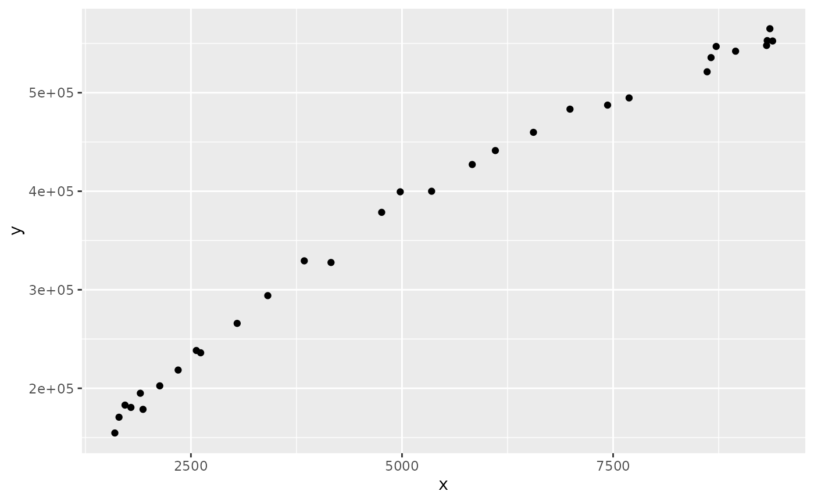

Modify a FIMS module to make it callable from RTMB
Source:vignettes/RTMB_add_module.Rmd
RTMB_add_module.RmdStep 1 Navigate to the rcpp directory and rcpp file of interest
The rcpp directory is located in
inst/include/interface/rcpp/rcpp_objects. Here, Rcpp
interface files are listed by category, e.g. rcpp_growth,
rcpp_selectivity, etc. This vignette will walk through
modifying the BevertonHolt recruitment function in
rcpp_recruitment.hpp to make it callable from RTMB.
At the top of the file, add the following if it isn’t already included:
#include "../../RTMB.h"Step 2 Locate the BevertonHolt recruitment
evaluate_mean function in
rcpp_recruitment
Find the BevertonHoltRecruitmentInterface. Within this
class, locate the evaluate_mean function, this is where the
BevertonHolt C++ function is called. Note in other modules, this
function will just be called evaluate() This function needs
to be copied and the copy then modified to be callable from RTMB.
virtual double evaluate_mean(double spawners, double phi_0) {
fims_popdy::SRBevertonHolt<double> BevHolt;
BevHolt.logit_steep.resize(1);
BevHolt.logit_steep[0] = this->logit_steep[0].initial_value_m;
if (this->logit_steep[0].initial_value_m == 1.0) {
Rcpp::warning(
"Steepness is subject to a logit transformation. "
"Fixing it at 1.0 is not currently possible."
);
}
BevHolt.log_rzero.resize(1);
BevHolt.log_rzero[0] = this->log_rzero[0].initial_value_m;
return BevHolt.evaluate_mean(spawners, phi_0);
}## Step 3: Create a copy of this function.
Rename it to evaluate_mean_RTMB and modify the type from
virtual double to ADrep. Add documentation and
wrap the entire function in:
#ifdef TMB_MODEL
...
#endifThis will ensure that this function is only compiled when TMB is being used.
#ifdef TMB_MODEL
/**
* @brief Evaluate recruitment using the Beverton--Holt stock--recruitment
* relationship.
* @param spawners Spawning biomass per time step.
* @param phi_0 The biomass at unfished levels.
*/
ADrep evaluate_mean_RTMB(double spawners, double phi_0) {
fims_popdy::SRBevertonHolt<double> BevHolt;
BevHolt.logit_steep.resize(1);
BevHolt.logit_steep[0] = this->logit_steep[0].initial_value_m;
if (this->logit_steep[0].initial_value_m == 1.0) {
Rcpp::warning(
"Steepness is subject to a logit transformation. "
"Fixing it at 1.0 is not currently possible."
);
}
BevHolt.log_rzero.resize(1);
BevHolt.log_rzero[0] = this->log_rzero[0].initial_value_m;
return BevHolt.evaluate_mean(spawners, phi_0);
}
#endif## Step 4: Modify types:
- Modify the types of the input parameters from
doubletoADrep - Modify the type within the class declaration function from
doubletoad, e.g.fims_popdy::SRBevertonHolt<double>tofims_popdy::SRBevertonHolt<ad>
ADrep evaluate_mean_RTMB(ADrep spawners, ADrep phi_0) {
fims_popdy::SRBevertonHolt<ad> BevHolt;
BevHolt.logit_steep.resize(1);
BevHolt.logit_steep[0] = this->logit_steep[0].initial_value_m;
if (this->logit_steep[0].initial_value_m == 1.0) {
Rcpp::warning(
"Steepness is subject to a logit transformation. "
"Fixing it at 1.0 is not currently possible."
);
}
BevHolt.log_rzero.resize(1);
BevHolt.log_rzero[0] = this->log_rzero[0].initial_value_m;
return BevHolt.evaluate_mean(spawners, phi_0);
}Step 5: Add new pointers for each parameter
For each input parameter, set up a new pointer using
const ad* and wrap the input parameter in
adptr(). If there are additional parameters in the model
that are not specified in the input, e.g. logit_steep, add
them as parameters to the input and set up new pointers for them:
ADrep evaluate_mean_RTMB(ADrep spawners, ADrep phi_0, ADrep logit_steep, ADrep log_rzero) {
fims_popdy::SRBevertonHolt<ad> BevHolt;
const ad* spawners_ptr = adptr(spawners);
const ad* phi_0_ptr = adptr(phi_0);
const ad* logit_steep_ptr = adptr(logit_steep);
const ad* log_rzero_ptr = adptr(log_rzero);
BevHolt.logit_steep.resize(1);
BevHolt.logit_steep[0] = this->logit_steep[0].initial_value_m;
if (this->logit_steep[0].initial_value_m == 1.0) {
Rcpp::warning(
"Steepness is subject to a logit transformation. "
"Fixing it at 1.0 is not currently possible."
);
}
BevHolt.log_rzero.resize(1);
BevHolt.log_rzero[0] = this->log_rzero[0].initial_value_m;
return BevHolt.evaluate_mean(spawners, phi_0);
}Step 6: Set parameters to pointers
- For parameters that are set within the function, set them to
equalthe value of each pointer,
e.g.
= *logit_steep_ptr - For parameters that are passed as input to the
evaluate_mean, pass in the pointers instead
ADrep evaluate_mean_RTMB(ADrep spawners, ADrep phi_0, ADrep logit_steep, ADrep log_rzero) {
fims_popdy::SRBevertonHolt<ad> BevHolt;
const ad* spawners_ptr = adptr(spawners);
const ad* phi_0_ptr = adptr(phi_0);
const ad* logit_steep_ptr = adptr(logit_steep);
const ad* log_rzero_ptr = adptr(log_rzero);
BevHolt.logit_steep.resize(1);
BevHolt.logit_steep[0] = *logit_steep_ptr;
if (BevHolt.logit_steep[0] == 1.0) {
Rcpp::warning(
"Steepness is subject to a logit transformation. "
"Fixing it at 1.0 is not currently possible."
);
}
BevHolt.log_rzero.resize(1);
BevHolt.log_rzero[0] = *log_rzero_ptr;
return BevHolt.evaluate_mean(spawners_ptr, phi_0_ptr);
}Step 7: Modify the return statement
The following code needs to be added to make the return callable from RTMB:
where x is the input variable.
The return function then needs to be set as a loop over all input and
the return modified to ans:
The completed function for BevertonHolt is:
#ifdef TMB_MODEL
/**
* @brief Evaluate recruitment using the Beverton--Holt stock--recruitment
* relationship.
* @param spawners Spawning biomass per time step.
* @param phi_0 The biomass at unfished levels.
*/
ADrep evaluate_mean_RTMB(ADrep spawners, ADrep phi_0, ADrep logit_steep, ADrep log_rzero) {
fims_popdy::SRBevertonHolt<ad> BevHolt;
const ad* spawners_ptr = adptr(spawners);
const ad* phi_0_ptr = adptr(phi_0);
const ad* logit_steep_ptr = adptr(logit_steep);
const ad* log_rzero_ptr = adptr(log_rzero);
BevHolt.logit_steep.resize(1);
BevHolt.logit_steep[0] = *logit_steep_ptr;
if (BevHolt.logit_steep[0] == 1.0) {
Rcpp::warning(
"Steepness is subject to a logit transformation. "
"Fixing it at 1.0 is not currently possible."
);
}
BevHolt.log_rzero.resize(1);
BevHolt.log_rzero[0] = *log_rzero_ptr;
int n = spawners.size();
ADrep ans(n);
ad* Y = adptr(ans);
for(int i=0; i<n; i++){
Y[i] = BevHolt.evaluate_mean(spawners_ptr[i], phi_0_ptr[0]);
}
return ans;
}
#endifStep 8: Expose to R
The final step is to expose this new function to R. Navigate to the
fims_module.hpp file under src Scroll down to
the BevertonHolt interface:
Rcpp::class_<BevertonHoltRecruitmentInterface>("BevertonHoltRecruitment").
Add the the following to the list of methods:
The final interface code chunk should look like:
Rcpp::class_<BevertonHoltRecruitmentInterface>("BevertonHoltRecruitment")
.constructor()
.field("logit_steep", &BevertonHoltRecruitmentInterface::logit_steep)
.field("log_rzero", &BevertonHoltRecruitmentInterface::log_rzero)
.field("log_devs", &BevertonHoltRecruitmentInterface::log_devs)
.field("log_r", &BevertonHoltRecruitmentInterface::log_r,
"recruitment as a random effect on the natural log scale")
.field("nyears", &BevertonHoltRecruitmentInterface::nyears,
"Number of years")
.field("log_expected_recruitment",
&BevertonHoltRecruitmentInterface::log_expected_recruitment,
"Log expectation of the recruitment process")
.method("get_id", &BevertonHoltRecruitmentInterface::get_id)
.method("SetRecruitmentProcessID",
&BevertonHoltRecruitmentInterface::SetRecruitmentProcessID,
"Set unique ID for recruitment process")
.method("evaluate_mean_RTMB", &BevertonHoltRecruitmentInterface::evaluate_mean_RTMB,
"Evaluate the mean recruitment using the RTMB framework")
.method("evaluate_mean",
&BevertonHoltRecruitmentInterface::evaluate_mean);Step 9: Use function in RTMB Modeling
Setup the RTMB environment:
## Global pointer successfully set: 0x7f506710aee0Set up a recruitment module using FIMS
recruitment <- methods::new(BevertonHoltRecruitment)
recruitment$show()## Reference class object of class "Rcpp_BevertonHoltRecruitment"
## Field "log_devs":
## 0x5619a9b4a9f0
## {"id": 3,
## "value": 0,
## "estimated_value": 0,
## "min": "-Infinity",
## "max": "Infinity",
## "estimation type is": "constant"
## } Field "log_expected_recruitment":
## 0x5619ae1c4500
## {"id": 5,
## "value": 0,
## "estimated_value": 0,
## "min": "-Infinity",
## "max": "Infinity",
## "estimation type is": "constant"
## } Field "log_r":
## 0x5619b56191c0
## {"id": 4,
## "value": 0,
## "estimated_value": 0,
## "min": "-Infinity",
## "max": "Infinity",
## "estimation type is": "constant"
## } Field "log_rzero":
## 0x5619b0331070
## {"id": 2,
## "value": 0,
## "estimated_value": 0,
## "min": "-Infinity",
## "max": "Infinity",
## "estimation type is": "constant"
## } Field "logit_steep":
## 0x5619b20b1110
## {"id": 1,
## "value": 0,
## "estimated_value": 0,
## "min": "-Infinity",
## "max": "Infinity",
## "estimation type is": "constant"
## } Field "nyears":
## C++ object <0x5619b3afcf70> of class 'SharedInt' <0x5619ae286730>Simulate data using the FIMS module
# set the two parameters from the recruitment module:
r0 <- 1e+06; h <- 0.75; phi_0 <- 0.1
recruitment$log_rzero[1]$value <- log(r0)
recruitment$logit_steep[1]$value <- FIMSRTMB::logit(0.2, 1.0, 0.75);
#spawners from FIMS comparison test data
X <- c(9317.537, 9388.807, 9356.490, 9325.130, 8950.209, 8720.467, 8659.642, 8613.245, 7689.096,
7434.469, 6989.143, 6556.460, 6105.419, 5831.374, 5350.386, 4978.918, 4758.962, 4159.215,
3842.397, 3410.286, 3047.454, 2564.075, 2615.329, 2348.742, 2130.985, 1932.811, 1900.979,
1789.534, 1598.782, 1719.572, 1648.269)
Y <- mu <- X * 0
sdy <- 7500 #observation error around bevertonholt
set.seed(123)
for(i in seq_along(X)){
# evaluate returns the bevertonholt function given the parameters and x
mu[i] <- recruitment$evaluate_mean(X[i], phi_0)
# simulate random noise around the mean
Y[i] <- rnorm(1, mu[i], sdy)
}
df <- data.frame(x = X, y = Y)
ggplot(df, aes(x = x, y = y)) + geom_point()
Set up RTMB model
dat <- list(y = Y, x = X)
par <- list(log_rzero = log(max(Y)), logit_steep = 0,
ln_sdy = log(1000))
mod <- function(par){
getAll(par, dat)
sdy <- exp(par$ln_sdy)
mean_recruitment <- recruitment$evaluate_mean_RTMB(
spawners = advector(dat$x), phi_0 = advector(0.1),
logit_steep = advector(par$logit_steep),
log_rzero = advector(par$log_rzero)
)
nll <- 0
for(i in seq_along(x)){
nll <- nll - RTMB::dnorm(y[i], mean_recruitment[i], sdy, TRUE)
}
return(nll)
}Generate TMB object and optimize
obj <- RTMB::MakeADFun(mod, par)
opt <- nlminb(obj$par, obj$fn, obj$gr)## outer mgc: 1018152
## outer mgc: 82367.92
## outer mgc: 54060.36
## outer mgc: 20589.24
## outer mgc: 16981.42
## outer mgc: 3841.6
## outer mgc: 2542.75
## outer mgc: 1042.539
## outer mgc: 2049.42
## outer mgc: 1160.555
## outer mgc: 854.7764
## outer mgc: 913.3611
## outer mgc: 825.0972
## outer mgc: 300.6294
## outer mgc: 157.265
## outer mgc: 43.9615
## outer mgc: 20.57949
## outer mgc: 8.150058
## outer mgc: 4.185564
## outer mgc: 2.558583
## outer mgc: 0.9774273
## outer mgc: 0.5983629
## outer mgc: 0.2017957
## outer mgc: 0.1237911
## outer mgc: 0.009367911
## outer mgc: 0.001011514
opt$par## log_rzero logit_steep ln_sdy
## 13.8394270 0.7699375 8.8467662
r0; exp(opt$par["log_rzero"])## [1] 1e+06## log_rzero
## 1024205
h; FIMSRTMB::inv_logit(0.2, 1.0, opt$par["logit_steep"])## [1] 0.75## [1] 0.7468059